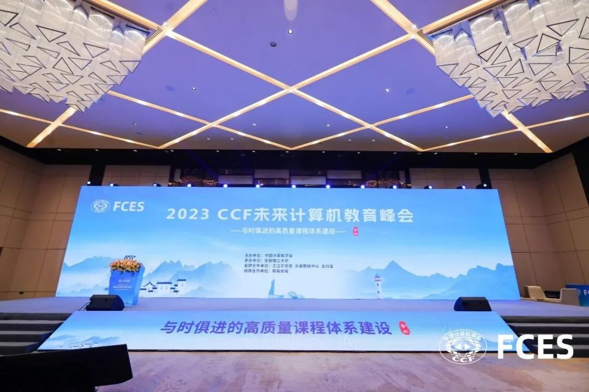
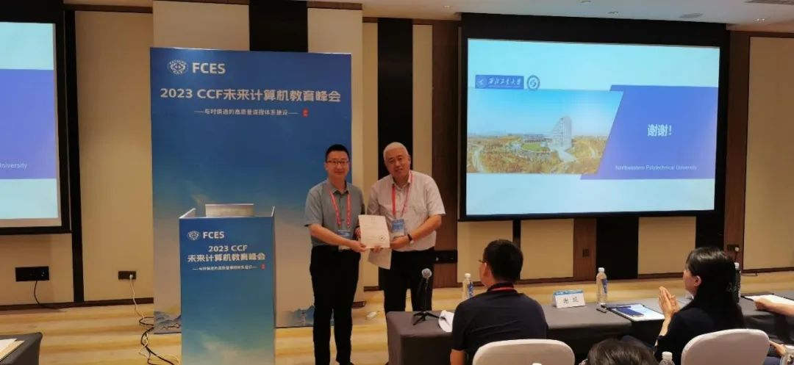
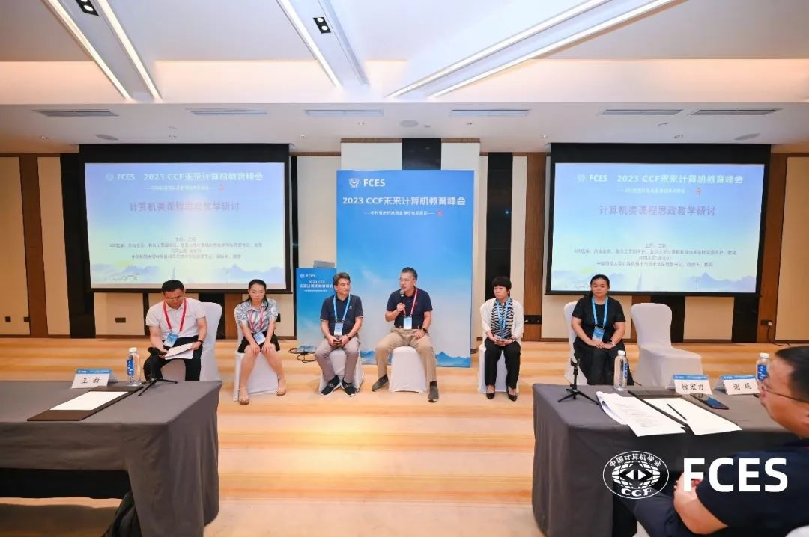
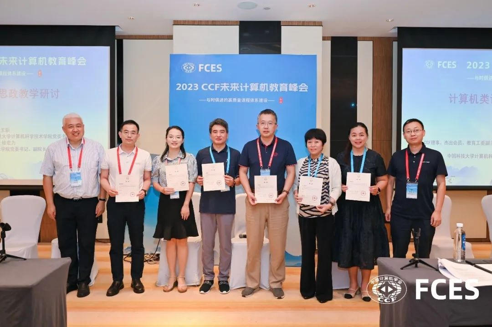
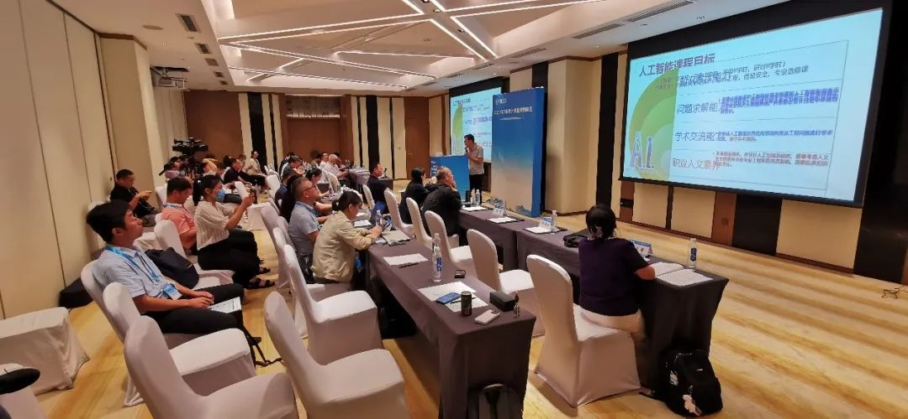

第七届CCF未来计算机教育峰会（FCES2023）于2023年8月4日至5日在合肥举办。本次峰会以“与时俱进的高质量课程体系建设”为主题，共设有5场主题报告、5场观点报告、1场大会论坛以及13个主题的分论坛。来自全国139所高校、23家科研机构和企业的440余位参会者共聚一堂，群策群力，从课程体系、人才培养、专业建设等多角度，探讨了如何在不断变化的科技时代为学生提供更加优质的教育，共同推动计算机教育的进步。

由复旦大学计算机科学技术学院党委书记王新教授担任主席、中国科学技术大学计算机科学与技术学院党委书记徐宏力教授担任共同主席的计算机类课程思政教学研讨分论坛在8月5日下午成功举办，包含9个特邀报告和2组圆桌讨论。

王新教授介绍了本次分论坛的背景，本次分论坛以“计算机类课程思政研讨”为主题，主要探讨如何以全面提高人才培养能力为核心，依托传承计算机学科特点，进一步深化“三全育人”综合改革，积极探索适合学生发展特质的教学方法和教学形式，进一步深入挖掘提炼专业课程所能蕴含的思政教育元素，提升教师开展课程思政建设的意识和能力，促进课程思政建设内涵式发展；贯彻将价值塑造、知识传授和能力培养三者融为一体，努力为国家信息技术领域培养满足国家发展和社会需求，具有工匠精神和职业道德，兼顾信息技术伦理，实现可靠、可信与自主可控技术的人才支撑，并鼓励各参会高校代表充分交流经验。
论坛首先进行了第一组4个特邀报告。暨南大学副校长翁健教授分享了“大思政视域下计算机类课程思政实践探索” 的报告。通过回顾课程思政指导纲要的文件内容和建设思路、“大思政”育人格局工作方案等形势分析，指出在思政目标、教学内容、教学环境演变和教学要求提升方面所面临的问题，提出课程思政教学内容设计要由点及面，思政融入的方法要充分考虑学生的认知规律，以及需要与多元考核评价来引导督促结合。并结合暨南大学的校情特点，介绍了面向非内地学生开展的国情教育以及计算机通识课程思政教材的实践建设案例。
福州大学副校长郭文忠教授分享了“基于OBE理念的课程思政建设探索” 的报告。提出遵循三大教育理念，从辩证思维看“学生中心”、从系统思维看“产出导向”、从精准思维看“持续改进”。新时代对卓越工程师提出了更多发展要求，基于产出导向OBE核心理念一体化建设课程思政体系可以保障课程思政质量，是课程思政综合改革的新范式。对此福州大学提出面向产出的一体化推进课程思政建设、构建计算机专业思政体系的一揽子方案，比如基于工程教育专业认证12条标准之外自主增设品德修养，推广应用思政教育元素参考表等，并分享了基于这些改革所取得的成绩。
西北工业大学计算机学院智能计算系统系主任张羽教授分享了“传承老一辈西工大计算机人优秀品质，勇做‘新一代’机载智能计算系统软件时代先锋的报告。以《计算机操作系统》课程为例，从课程思政元素挖掘、整理、对照，结合西工大品牌、历史和计算机学科特色以及与教师科研紧密相关的思政案例设计，包含团队构建、思政比赛、案例库建设、教材建设、实践环节等全方位、全过程的思政过程实施等方面来演绎。

复旦大学计算机科学技术学院/智能机器人研究院副院长张文强教授分享了“新工科下的机器人课程思政建设与产教融合”的报告。依托复旦大学作为综合性大学的人才培养目标：国家意识、人文情怀、科学精神、专业素养、全球视野，课题组充分挖掘思政元素，融入到以多学科交叉为载体的机器人课程教学，清晰表达机器人是中国重点发展领域，通过职业素养、爱国主义精神、伦理哲学和科学素养等角度，激发学生民族自信与爱国热情，同时也注重个性化学生的培养，取得了良好的效果。
特邀报告结束后，论坛进行了第一组圆桌讨论，由华中师范大学计算机学院院长蒋兴鹏教授主持，南京航空航天大学研究生院常务副院长陈兵教授、哈尔滨工业大学计算学部软件学院智能软件工程研究中心苏小红教授、重庆邮电大学计算机学院马彬教授、上海师范大学信息与机电工程学院副院长魏爽副教授、南京邮电大学计算机学院胡素君副教授作为论坛分享嘉宾，先后讨论了关于计算机类课程思政的特点、教学评价的机制和实现手段、教师的激励措施、数字化赋能课程思政以及目前面临的挑战等话题。

接下来，论坛进行了第二组的5个特邀报告。西安电子科技大学计算机科学与技术学院网络工程系主任谢琨教授分享了“计算机类课程思政体系建设初探”的报告。介绍了学院计算机类课程思政的顶层设计、内容重构、教材与案例库建设、产教融合多维度育人和构建教师学习共同体等建设情况，展示了目标导向的课程思政映射矩阵，提出了三段式课程思政教学方法，将课程思政分为课前通过案例打造优化内容供给，课中引入新形式提升教学效果，课后思政指标观测检验思政成效三个阶段，取得了不错的效果。
哈尔滨工程大学本科生院副院长刘海波教授分享了“递进式融入的人工智能课程思政”的报告。针对《人工智能》课程，抓住人工智能伦理主线，科技服务社会、智能改变生活，内生式挖掘课程思政元素，就地取材，从知识性、趣味性、艺术性、思想性到哲理性递进式融入，塑造个人价值观，从而形成一个全链条的、闭环的课程思政实施范式，实现知识传授、能力培养和价值塑造三位一体，让学生在思想上认同学校的文化传统。

中国科学技术大学计算机科学与技术学院张昱教授分享了“基础软件研发人才培养方法的探讨”的报告。介绍了当前基础软件行业的情况、所面临的时代背景以及基础软件在国内的科研发展史，表达了要发展基础软件的人才培养，希望把科学研究引导到教学中，以教学来促进和激发创新，同时贯穿课程思政，并针对《编译原理和技术》课程的教、学、研做了详细举例。
上海电力大学计算机科学与技术学院常务副院长张传林教授分享了“上海电力大学领航学院课程思政实施路径探索与实践”的报告。介绍了学院课程思政建设总体方案，围绕立德树人的核心，遵循思政工作、教书育人、学生成长的三个规律，突出科技创新、互联网+思政平台、网络思政的三项工作，实现了六个主要目标，为此成立了“学校-院系-课程领航团队-课程组”四级课程思政组织架构，并对所有专业的所有课程进行了一个系统的梳理。其中，由课程领航团队分别建设了16门课程，把课程思政的育人目标融入到课程大纲，实现思政元素全覆盖。并通过一系列研讨沙龙和培训，进行了广泛的课程思政示范展示，取得了良好的效果。
华东理工大学教务处副处长万永菁教授分享了“课程思政教学设计与思考——以数字信号处理为例”的报告。介绍了在《数字信号处理》课程中，通过明晰课程思政育人目标、细化思政育人要点，所设计的一些特色教学内容和不同的演绎形式，表达了课程思政育人目标不仅仅只靠案例本身去呈现，教师在课前、课中、课后全过程中变现出来的教书育人的态度和敬业精神、自身的工程素养和科学思维的方式，针对实际工程问题的辨识能力与创新意识等，这些言传身教，都是无声的课程思政案例。
论坛接着又进行了第二组圆桌讨论，由复旦大学计算机科学技术学院周扬帆教授主持，东北大学计算机学院副院长鲍玉斌教授、上海商学院信息学院副院长蒋传进教授、上海电机学院电子信息学院吕品教授、东华大学计算机科学与技术学院院长助理王鹏伟副教授、杭州电子科技大学计算机学院赵伟华副教授作为论坛分享嘉宾，共同讨论了依托各位管理院长和课程教学专家的实际经验以及各自专业、课程特点，关于制度设计、示范引导与推广、思政元素演绎方式（润物无声）、中国特色融入、以及典型案例等内容。
最后，本次分论坛主席王新教授做总结发言，指出课程思政是一个立德树人的长期过程，没有完成时、只有进行时。并感谢每一位参与老师的精彩分享和观点碰撞，让所有与会者收获颇多，希望未来大家对课程思政有更多的交流和学习借鉴机会，共同进步。
转载来源：中国计算机学会 公众号